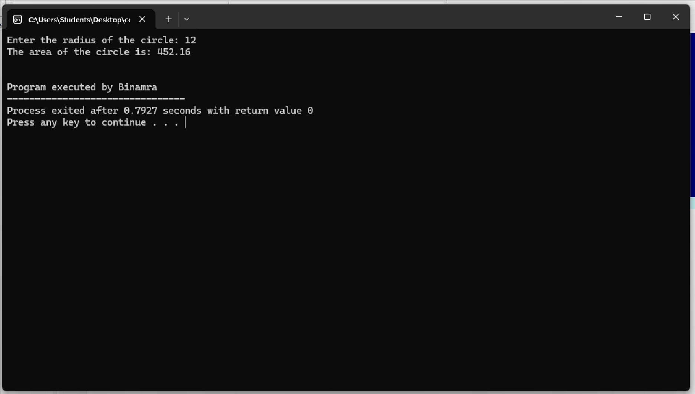
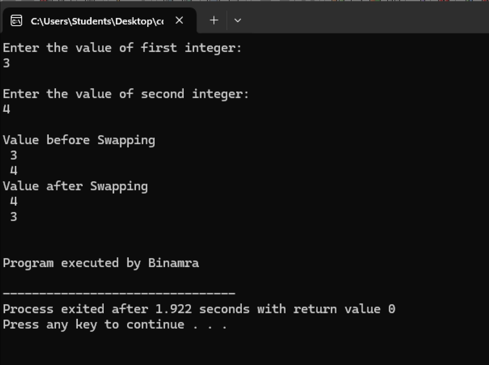
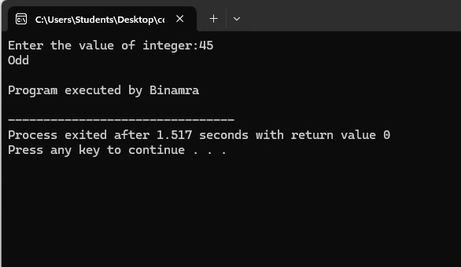
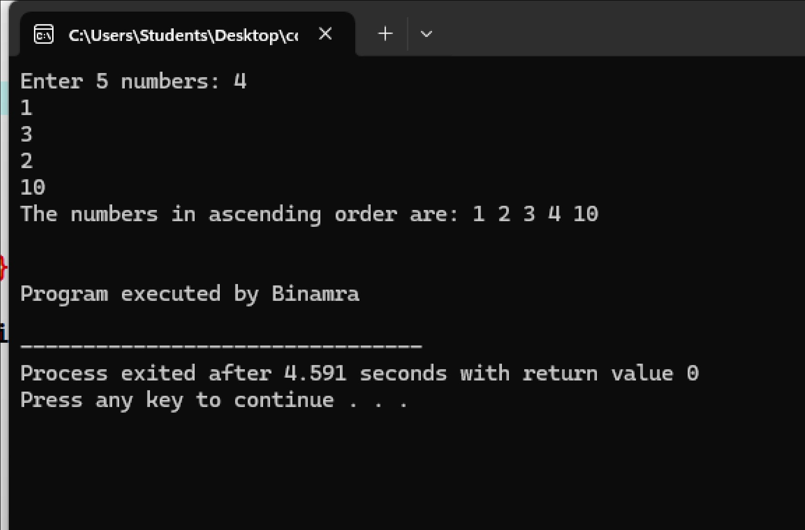
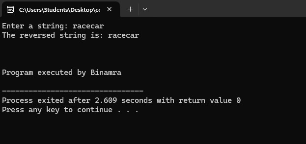
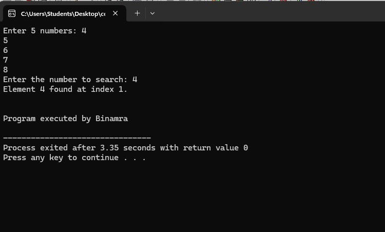

Questions
Q1. Write a C program to calculate the area of a circle using Pointer.
Do you want to see:
// Q1. C Program to calculate the area of a circle using Pointer #includeint main() { float radius, area; float pi = 3.14; float *rad = &radius; float *area_1 = &area; printf("Enter the radius of the circle: "); scanf("%f", rad); *area_1 = pi * (*rad) * (*rad); printf("The area of the circle is: %.2f\n", *area_1); printf("\n\nProgram executed by Binamra"); return 0; }
Output for Q1:

Q2. Write a C program to find the maximum value between two numbers using Pointer.
Do you want to see:
// Q2. C Program to find the maximum value between two numbers using Pointer #includevoid Maxo(int *a, int *b, int *c) { if (*a > *b) { *c = *a; } else { *c = *b; } } int main() { int num1, num2, max; printf("Enter two numbers: "); scanf("%d %d", &num1, &num2); Maxo(&num1, &num2, &max); printf("The maximum value is: %d\n", max); printf("\n\nProgram executed by Binamra\n"); return 0; }
Output for Q2:

Q3. Write a C program to swap two numbers using call by reference.
Do you want to see:
// Q3. C Program to swap two numbers using call by reference #includeint swap(int *a,int *b); int main (){ int j,k; printf("Enter the value of first integer:\n"); scanf("%d",&j); printf("\nEnter the value of second integer:\n"); scanf("%d",&k); printf("\nValue before Swapping"); printf("\n %d \n %d \n",j,k); swap(&j, &k); printf("Value after Swapping"); printf("\n %d \n %d \n",j,k); printf("\n\nProgram executed by Binamra\n"); return 0; } int swap(int *a, int *b){ int temp; temp=*a; *a=*b; *b=temp; return 0; }
Output for Q3:

Q4. Write a C program to check whether the input number is odd or even using call by reference.
Do you want to see:
// Q4. C Program to check whether the input number is odd or even using call by reference #includeint swap(int *a,int *b); int main (){ int j,k; printf("Enter the value of integer:"); scanf("%d",&j); swap(&j, &k); printf("\n\nProgram executed by Binamra\n"); return 0; } int swap(int *a, int *b){ int temp; temp=*a % 2; if(temp==0){printf("Even");} else {printf("Odd");} return 0; }
Output for Q4:

Q5. Write a C program to check whether the input number is prime or not using Pointer and Function.
Do you want to see:
// Q5. C Program to check whether the input number is prime or not using Pointer and Function #include#include bool isPrime(int *num) { if (*num <= 1) return false; for (int i = 2; i * i <= *num; i++) { if (*num % i == 0) return false; } return true; } int main() { int num; printf("Enter a number: "); scanf("%d", &num); if (isPrime(&num)) { printf("%d is a prime number.\n", num); } else { printf("%d is not a prime number.\n", num); } return 0; }
Output for Q5:
Q6. Write a C program to find the factorial of a given number using call by reference.
Do you want to see:
// Q6. C Program to find the factorial of a given number using call by reference #includevoid factorial(int *num, int *fact) { *fact = 1; for (int i = 1; i <= *num; i++) { *fact *= i; } } int main() { int num, fact; printf("Enter a number: "); scanf("%d", &num); factorial(&num, &fact); printf("The factorial of %d is: %d\n", num, fact); printf("\n\nProgram executed by Binamra\n"); return 0; }
Output for Q6:

Q7. Write a C program to print the array of 5 numbers in ascending order using Pointer.
Do you want to see:
// Q7. C Program to print the array of 5 numbers in ascending order using Pointer #includevoid sortArray(int *arr, int size) { for (int i = 0; i < size - 1; i++) { for (int j = i + 1; j < size; j++) { if (*(arr + i) > *(arr + j)) { int temp = *(arr + i); *(arr + i) = *(arr + j); *(arr + j) = temp; } } } } int main() { int arr[5]; printf("Enter 5 numbers: "); for (int i = 0; i < 5; i++) { scanf("%d", &arr[i]); } sortArray(arr, 5); printf("The numbers in ascending order are: "); for (int i = 0; i < 5; i++) { printf("%d ", arr[i]); } printf("\n"); printf("\n\nProgram executed by Binamra\n"); return 0; }
Output for Q7:

Q8. Write a C program to calculate the length of a string using Pointer and Function.
Do you want to see:
// Q8. C Program to calculate the length of a string using Pointer and Function #includeint stringLength(char *str) { int length = 0; while (*str != '\0') { length++; str++; } return length; } int main() { char str[100]; printf("Enter a string: "); fgets(str, sizeof(str), stdin); int length = stringLength(str); printf("The length of the string is: %d\n", length-1); printf("\n\nProgram executed by Binamra\n"); return 0; }
Output for Q8:

Q9. Write a C program to find the reverse of a string using call by reference.
Do you want to see:
// Q9. C Program to find the reverse of a string using call by reference #include#include void reverseString(char *str) { int length = strlen(str); for (int i = 0; i < length / 2; i++) { char temp = str[i]; str[i] = str[length - i - 2]; str[length - i - 2] = temp; } } int main() { char str[100]; printf("Enter a string: "); fgets(str, sizeof(str), stdin); reverseString(str); printf("The reversed string is: %s\n", str); printf("\n\nProgram executed by Binamra\n"); return 0; }
Output for Q9:

Q10. Write a C program to search an element in an array using pointers.
Do you want to see:
// Q10. C Program to search an element in an array using pointers #includeint searchElement(int *arr, int size, int key) { for (int i = 0; i < size; i++) { if (*(arr + i) == key) { return i; } } return -1; } int main() { int arr[5], key, index; printf("Enter 5 numbers: "); for (int i = 0; i < 5; i++) { scanf("%d", &arr[i]); } printf("Enter the number to search: "); scanf("%d", &key); index = searchElement(arr, 5, key); if (index != -1) { printf("Element %d found at index %d.\n", key, index+1); } else { printf("Element %d not found in the array.\n", key); } printf("\n\nProgram executed by Binamra\n"); return 0; }
Output for Q10:
